Kit gratuito · Intentia
Diário de conquistas
com IA
Como usar Claude, ChatGPT e Gemini para registrar o que você entrega, transformar trabalho em argumento e chegar à avaliação com o ano inteiro na mão.
5 ferramentas3 plataformas8 comandos prontos

intentiahub.com · @intentia.hubA IA não faz a sua carreira. Mas trabalha por ela toda semana.
Carreira se constrói com entregas, e se negocia com evidências. A IA é uma ferramenta poderosa justamente no espaço entre as duas: ela ajuda a lembrar, organizar, traduzir e preparar.
01
Memória externa
Guarda e organiza o que você entrega, no momento em que acontece. Você para de depender da lembrança do último mês.
"Em março eu reestruturei o fechamento" vira um registro datado, com resultado e evidência.
02
Tradutora de impacto
Transforma tarefa em resultado. Faz as perguntas que um bom gestor faria: quanto, para quem, o que mudou?
"Fiz um relatório" vira "reduzi o fechamento de 3 dias para 1".
03
Parceira de preparação
Monta roteiros, antecipa objeções e simula conversas difíceis antes que elas aconteçam de verdade.
Ensaiar o pedido de promoção com a IA no papel da sua liderança.
04
Espelho de desenvolvimento
Com meses de registros, revela padrões: em que você brilha, que competência não aparece, o que desenvolver.
"Tenho muitas entregas técnicas e quase nenhuma de liderança."
O que a IA não faz por você
- Não cria resultado. Ela organiza o que você fez; não deve inventar números.
- Não conhece o contexto da sua empresa: cultura, política, prioridades da liderança.
- Não substitui o seu julgamento. Ela sugere; quem decide e assina é você.
- Pode errar com segurança. Confira tudo antes de usar.
Como usar este kit
| Passo 1 | Entenda os recursos de cada plataforma (págs. 4–5) |
| Passo 2 | Monte as 5 ferramentas na plataforma que você já usa (págs. 6–11) |
| Passo 3 | Mantenha a rotina de 10 minutos por semana (pág. 12) |
Antes de começar
A memória guarda o último mês. A avaliação cobre o ano.
Na hora da avaliação, quase todo mundo lembra do que fez em novembro e esquece o projeto difícil de março. Não é falta de resultado. É falta de registro.
O diário de conquistas resolve isso com 10 minutos por semana. E a IA tira o trabalho chato do caminho: você conta do seu jeito, ela organiza, e quando a avaliação chegar, transforma tudo em argumento.
O formato de cada registro
Todas as ferramentas deste kit usam os mesmos seis campos. Veja um exemplo preenchido:
| Data | 14 de outubro |
| Projeto | Fechamento mensal do orçamento |
| Problema | O relatório saía com 3 dias de atraso todo mês |
| Minha contribuição | Reorganizei a consolidação dos dados com o time de Compras e criei um modelo único |
| Resultado | Fechamento em 1 dia, a partir de outubro |
| Evidência | E-mail da diretoria agradecendo; calendário de fechamento novo |
A evidência é o que separa "eu acho que fiz bem" de "está aqui o que mudou". Guarde o e-mail, o número ou o nome de quem viu.
Sem número? Tudo bem. Impacto também é prazo, qualidade, risco evitado, retrabalho eliminado ou alguém que passou a confiar no seu trabalho.
Onde o diário mora de verdade
A IA conversa; ela não é um arquivo confiável. Crie um documento-mestre (Google Docs, Word ou Notas) chamado "Diário de conquistas 2026". A cada registro pronto, copie para lá. Uma vez por mês, atualize esse arquivo dentro do seu projeto na IA. Assim o histórico fica sempre com você, mesmo que você troque de ferramenta, de plano ou de empresa.
Referencial
Seis conceitos para entender qualquer IA
Claude, ChatGPT e Gemini usam nomes diferentes para ideias parecidas. Entendendo o conceito, você se vira em qualquer uma.
ChatA conversa avulsa. Bom para dúvidas rápidas. Sem instruções fixas, você precisa explicar o contexto toda vez.
ProjetoUm espaço fixo com instruções e arquivos próprios. Toda conversa aberta ali já "sabe" quem você é e o que fazer.
Artefato / CanvasUm documento que abre ao lado da conversa, para você ler, editar e pedir ajustes em partes específicas.
Tarefa agendadaA IA age sozinha em um horário combinado, como um agente: puxa a conversa e você só responde.
SkillUm comando ou conjunto de instruções que você salva uma vez e reutiliza sempre que precisar.
MemóriaA IA guarda preferências e fatos entre conversas. Útil, mas você pode ver, editar ou desligar.
Qual usar em cada momento do diário
| Momento | Recurso ideal | Por quê |
|---|
| Registrar uma entrega | Projeto | O formato de seis campos já está nas instruções. |
| Lembrar de registrar | Tarefa agendada | A IA pergunta; você não depende de disciplina. |
| Contar a semana correndo | Voz / ditado | Dois minutos falando rendem mais que dez digitando. |
| Escrever a autoavaliação | Skill + Artefato/Canvas | Comando pronto e texto editável lado a lado. |
| Ensaiar a conversa | Chat no projeto, por voz | Simulação realista com seus dados à mão. |
Qual plataforma escolher? A que você já usa e que a sua empresa autoriza. As cinco ferramentas deste kit funcionam nas três. O que faz diferença não é a marca: é registrar toda semana.
Referencial
Claude, ChatGPT e Gemini: o mesmo recurso, nomes diferentes
Use esta tabela como dicionário. Nas próximas páginas, cada ferramenta vem com o passo a passo nas três plataformas.
| Conceito | Claude | ChatGPT | Gemini |
|---|
| Conversa | Chat | Chat | Chat |
| Espaço fixo com instruções e arquivos | Projetos | Projetos | Notebooks (integrados ao NotebookLM) |
| Documento editável ao lado | Artefatos | Canvas | Canvas |
| Instruções e comandos salvos | Skills | GPTs personalizados | Skills (substituem os Gems) |
| Tarefa em horário marcado | Tarefas agendadas | Tarefas | Ações programadas |
| Falar em vez de digitar | Modo de voz e ditado | Voz e ditado | Gemini Live e ditado |
| Lembrar entre conversas | Memória | Memória (pode ser só do projeto) | Memória (e memória do notebook) |
O ponto forte de cada uma para este kit
Claude
Textos com tom natural e firme, bom para autoavaliação. Os Artefatos deixam o documento pronto ao lado da conversa, e as Skills guardam o seu método de avaliação.
ChatGPT
Tarefas criadas com uma frase ("toda sexta às 17h…"), modo de voz maduro e memória do projeto, que mantém o contexto do diário separado do resto.
Gemini
Integração com o ecossistema Google: o documento-mestre pode viver no Google Docs, e os Notebooks sincronizam com o NotebookLM para resumos e revisões.
Atualizado em outubro de 2026. Nomes de botões, recursos e limites mudam com frequência e variam conforme o plano (gratuito ou pago) e o tipo de conta (pessoal ou corporativa). No Gemini, os Gems estão sendo substituídos pelas Skills a partir de novembro de 2026. Se algo não aparecer na sua conta, procure o recurso equivalente nas configurações ou use o plano B indicado em cada ferramenta.
Ferramenta 1
Um projeto só seu na IA
Um espaço fixo, com instruções fixas, onde mora o seu diário. Você não precisa explicar tudo de novo a cada conversa.
Como criar em cada plataforma
Claude
- Na barra lateral, abra Projetos › Novo projeto.
- Nome: "Minhas conquistas".
- Cole o texto abaixo nas instruções do projeto.
- Suba o documento-mestre nos arquivos do projeto.
ChatGPT
- Na barra lateral, abra Projetos › Novo projeto.
- Se a opção aparecer, escolha memória só do projeto.
- Nas configurações do projeto, cole o texto em Instruções.
- Adicione o documento-mestre em Arquivos.
Gemini
- Na barra lateral, abra Notebooks e crie um novo.
- Nome: "Minhas conquistas".
- Cole o texto nas instruções personalizadas do notebook.
- Adicione o documento-mestre como fonte.
Copie e cole nas instruçõesVocê é meu assistente de carreira e guarda o meu diário de conquistas profissionais.
MEU CONTEXTO
Cargo: [seu cargo] · Área: [sua área] · Objetivo deste ano: [ex.: promoção a coordenação]
Critérios da minha avaliação: [cole as metas ou competências da empresa, se tiver]
QUANDO EU CONTAR UMA ENTREGA
1. Organize em seis campos: data, projeto, problema, minha contribuição, resultado e evidência.
2. Se faltar algum campo, faça no máximo 2 perguntas curtas antes de registrar. Priorize o resultado concreto e a evidência.
3. Ajude a medir o impacto: pergunte por tempo, dinheiro, volume, qualidade, risco ou satisfação. Sem número, registre o impacto qualitativo com honestidade.
4. Separe o que eu fiz do que o time fez. Escreva "minha contribuição" com verbos de ação (liderei, criei, negociei, destravei).
5. Marque cada registro com 1 a 3 etiquetas: Resultado de negócio, Liderança, Colaboração, Inovação ou Desenvolvimento, ou com as competências que informei.
REGRAS
· Nunca invente dados, números ou evidências. Se eu não souber, escreva "a confirmar".
· Tom factual, firme e específico: sem exagero e sem falsa modéstia.
· Se eu citar cliente, valor de contrato ou dado sigiloso, me avise e sugira uma versão genérica.
FORMATO
Mostre o registro em tabela, depois uma linha "Para fortalecer:" com o que ainda falta. Pergunte se pode considerar o registro final.
Na primeira conversa, teste com uma entrega recente. Se o resultado vier longo demais ou com perguntas demais, ajuste as instruções: o projeto é seu.
Ferramenta 2
Um agente que pergunta por você
Agende uma tarefa semanal (sexta, 17h). A IA vira um agente: lembra sozinha, puxa a conversa, e você só responde.
Como agendar em cada plataforma
Claude
- Use as tarefas agendadas, quando disponíveis no seu plano.
- Crie uma tarefa semanal, sexta, 17h, e cole o comando abaixo.
- Se o recurso não aparecer na sua conta, use o plano B.
ChatGPT
- Em uma conversa, cole o comando começando por "Toda sexta às 17h".
- O ChatGPT cria a tarefa e avisa quando chegar a hora.
- Para editar ou pausar, abra Tarefas no menu.
Gemini
- Cole o comando começando por "Toda sexta às 17h".
- O Gemini cria uma ação programada.
- Para editar ou pausar, procure Ações programadas nas configurações.
Toda sexta-feira às 17h: conduza a revisão semanal do meu diário de conquistas. Você é meu assistente de carreira. Faça uma pergunta por vez e espere a minha resposta antes da próxima:
1. Qual foi a entrega mais importante desta semana, mesmo que pareça pequena?
2. Que problema você destravou, ou que risco evitou?
3. Quem você ajudou, e o que mudou para essa pessoa ou time?
4. Recebeu algum feedback, elogio ou número que comprove o resultado?
5. O que você aprendeu ou fez pela primeira vez?
Se eu responder "nada relevante", me ajude a lembrar: pergunte sobre reuniões, decisões, pedidos que recebi e problemas que alguém trouxe para mim.
No final, transforme as respostas em registros no formato de seis campos (data, projeto, problema, minha contribuição, resultado, evidência) e liste à parte tudo o que ficou "a confirmar".
Plano B, em qualquer plataforma: crie um lembrete no celular para sexta, 17h, abra o projeto "Minhas conquistas" e cole o comando (sem a primeira linha).
Atenção: em algumas plataformas a tarefa agendada roda fora do projeto. Se for o seu caso, responda normalmente e, no fim, cole os registros prontos dentro do projeto e no documento-mestre.
Bônus: o resumo do mês
Faça o resumo do mês de [mês] com base nos meus registros: principais entregas, números, competências que demonstrei e evidências que ainda preciso buscar. Termine com 1 sugestão do que priorizar no próximo mês para fortalecer o meu objetivo do ano.
Ferramenta 3
Fale em vez de digitar
No carro, na caminhada ou no café: grave 2 minutos contando a semana, sem se preocupar com ordem. A IA separa, organiza e pergunta o que faltou.
Como usar a voz em cada plataforma
Claude
- No app do celular, abra uma conversa dentro do projeto.
- Toque no microfone para ditar, ou use o modo de voz para conversar.
- Envie o comando abaixo antes de falar.
ChatGPT
- No app, abra uma conversa dentro do projeto.
- Use o ditado (microfone) para virar texto, ou o modo de voz para conversar.
- Envie o comando abaixo antes de falar.
Gemini
- No app, abra uma conversa no notebook.
- Use o microfone para ditar, ou o Gemini Live para conversar.
- Envie o comando abaixo antes de falar.
Copie e cole antes do áudioVou te contar a minha semana falando, sem ordem e sem filtro. Transforme o que eu disser em registros do meu diário de conquistas:
1. Faça um registro para cada entrega diferente, no formato de seis campos.
2. Ignore desabafos e detalhes sem importância, mas guarde o que eu aprendi em uma seção "Aprendizados da semana".
3. Quando eu disser "mais ou menos", "acho que" ou "uns", marque o dado como "a confirmar".
4. Se eu mencionar algo que pode virar evidência (um e-mail, uma mensagem, um número), destaque para eu guardar.
5. No fim, faça até 3 perguntas para completar o que faltou, começando pelos resultados.
Roteiro para não travar no áudio
O que fiz
As 2 ou 3 coisas que mais tomaram o seu tempo.
O que mudou
Prazo, qualidade, custo, um problema que deixou de existir.
Quem viu
Quem recebeu, agradeceu, aprovou ou usou.
O que aprendi
Algo novo, uma conversa difícil, um erro que virou ajuste.
Ditado ou conversa? Para o diário, prefira o ditado: o áudio vira texto na conversa e fica fácil revisar. O modo de conversa por voz é ótimo para ensaiar (ferramenta 5), mas confira se a transcrição ficou salva no histórico.
Ferramenta 4
Uma skill para a hora da avaliação
Uma skill é um comando que você salva uma vez e usa sempre. Estes dois transformam meses de registros em resultados e em texto pronto para o formulário.
Comando 1 · Os 5 resultados do anoAtue como especialista em avaliação de desempenho. Use todos os registros do meu diário [no arquivo do projeto / colados abaixo].
1. Selecione os 5 resultados mais relevantes do período. Priorize: impacto no negócio, alinhamento aos critérios da minha avaliação e qualidade da evidência.
2. Para cada um, escreva: título curto · contexto em 1 frase · o que eu fiz · resultado com número · impacto para a área · evidência.
3. Indique quais competências cada resultado demonstra.
4. Liste à parte: registros fortes que ficaram de fora e lacunas (competências sem nenhuma evidência no ano).
Use apenas o que está nos registros. Não invente números nem arredonde para cima.
Comando 2 · AutoavaliaçãoAgora transforme esses 5 resultados em texto para o meu formulário de autoavaliação.
· Primeira pessoa, tom firme e sem exagero, frases curtas.
· Um parágrafo de 3 a 5 linhas por resultado: situação → minha ação → resultado → impacto.
· Respeite o limite de [X] caracteres por campo, se houver.
· Feche com um parágrafo sobre o que quero desenvolver no próximo ciclo, a partir das lacunas.
Entregue em um documento editável (artefato no Claude, canvas no ChatGPT ou no Gemini).
Como salvar a skill em cada plataforma
Claude
- Crie uma skill "Avaliação de desempenho" no recurso Skills das configurações, conforme o seu plano.
- Alternativa: salve os comandos como arquivo no projeto.
- O texto final abre como artefato.
ChatGPT
- Salve os comandos como arquivo no projeto e peça: "use o comando de avaliação".
- Para reutilizar fora do projeto, crie um GPT personalizado.
- O texto final abre no Canvas.
Gemini
- Crie uma skill descrevendo o que ela faz e colando os comandos.
- Se ainda usa um Gem, ele será migrado para skill.
- Peça o texto final no Canvas.
Ferramenta 5
Prepare a conversa
Resultado registrado vira argumento quando chega à conversa certa. Antes de falar com a sua liderança, monte o roteiro e ensaie.
Vou ter uma conversa de [avaliação / feedback / promoção / aumento] com [cargo da liderança] em [data]. Meu objetivo é [o que quero sair da conversa sabendo ou tendo]. Com base no meu diário:
1. Monte um roteiro de 15 minutos: abertura, 3 resultados para destacar (com números), o meu pedido e as perguntas que vou fazer.
2. Escreva o meu pedido em uma frase objetiva, sem rodeio e sem pedir desculpas.
3. Antecipe as 3 objeções mais prováveis da liderança e sugira respostas apoiadas em evidências do diário.
4. Sugira 3 perguntas que mostrem visão de futuro, como "o que você precisa ver de mim para o próximo nível?".
Agora faça o papel da minha liderança nessa conversa. Seja realista e um pouco exigente, como alguém com orçamento apertado e outras prioridades. Faça uma pergunta ou objeção por vez e espere a minha resposta.
Depois de 5 trocas, saia do personagem e me dê um feedback: o que foi convincente, o que ficou vago, onde faltou evidência e como eu poderia dizer melhor.
Como fazer em cada plataforma
Claude
Abra uma conversa no projeto e use o comando 1. Para o ensaio, use o modo de voz: falar em voz alta revela onde você hesita.
ChatGPT
Abra uma conversa no projeto e use o comando 1. Faça o ensaio no modo de voz e peça o roteiro final no Canvas para ajustar.
Gemini
Abra uma conversa no notebook e use o comando 1. Para o ensaio, use o Gemini Live, ou o chat por texto se o Live não abrir no notebook.
Depois da conversa: conte à IA como foi e registre os combinados, prazos e próximos passos. Isso vira o ponto de partida do próximo ciclo.
Cuidado
Não cole informação confidencial.
A IA é uma ferramenta poderosa, e por isso pede critério. Estas regras protegem você e a sua empresa.
- Use a ferramenta de IA que a sua empresa autoriza. Na dúvida, pergunte ao time de TI ou de segurança. Muitas empresas têm versões corporativas com regras próprias.
- Registre o seu papel, não os segredos do negócio. "Reduzi o prazo de entrega em 40%" funciona sem o nome do cliente nem o valor do contrato.
- Troque por descrições genéricas nomes de clientes, projetos sigilosos, dados pessoais de colegas e números estratégicos.
- Confira as configurações de privacidade da sua conta: memória, histórico e uso das conversas para treinar modelos. Cada plataforma permite revisar isso.
- Confira tudo o que a IA escreve antes de usar. Ela organiza; quem responde pelo conteúdo é você.
Antes e depois: como generalizar
| Evite | Prefira |
|---|
| "Fechei o contrato de R$ 2,3 milhões com a Empresa X" | "Fechei o maior contrato do trimestre da minha carteira" |
| "Resolvi a falha no sistema de pagamentos do Projeto Aurora" | "Resolvi uma falha crítica em um sistema de pagamentos" |
| "Dei feedback ao Fulano sobre o desempenho dele" | "Conduzi uma conversa de desenvolvimento com uma pessoa do time" |
Regra de bolso: se você não colaria aquela frase em uma apresentação para outra empresa, não cole na IA.
A sua rotina
10 minutos por semana. O ano inteiro na mão.
Hoje (20 minutos)
- Crie o documento-mestre "Diário de conquistas 2026" (pág. 3).
- Crie o projeto "Minhas conquistas" e cole as instruções (ferramenta 1).
- Agende a pergunta de sexta, 17h, ou o lembrete do plano B (ferramenta 2).
- Registre uma entrega recente para testar o formato.
Toda sexta (10 minutos)
- Responda à pergunta do agente ou grave o áudio de 2 minutos (ferramenta 3).
- Copie os registros prontos para o documento-mestre.
Uma vez por mês (15 minutos)
- Peça o resumo do mês e busque as evidências que faltaram (pág. 7).
- Atualize o documento-mestre dentro do projeto.
Na avaliação
- Use a skill dos 5 resultados e da autoavaliação (ferramenta 4).
- Monte o roteiro e ensaie a conversa com a liderança (ferramenta 5).
Quem registra, lembra. Quem lembra, argumenta.
Mais conteúdo sobre desenvolvimento de carreira no Instagram @intentia.hub e em intentiahub.com.